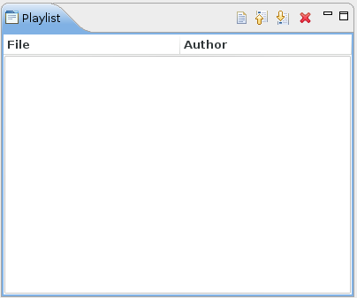

The Playlist view is the waiting queue of the Engine. Scan descriptions build with the Editor and send to the Engine are enqueued here. The Engine subsequently executes them in the order they arrived.
The toolbar commands also allow inserting a scan description from an existing file. The view shows the filename and author (user) who send the file. The order of the scan descriptions waiting in line can be modified with the arrow key buttons (the topmost is the head of the list). A scan description can also be deleted from the list.